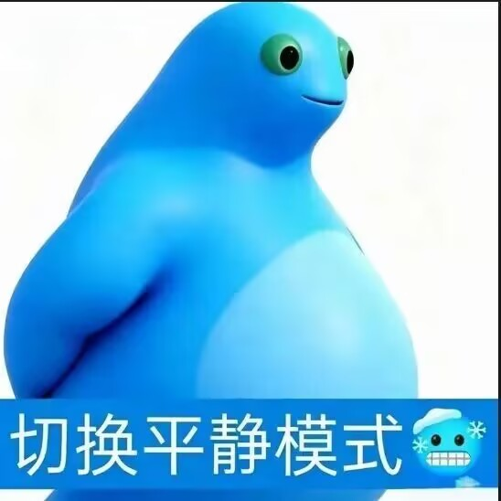
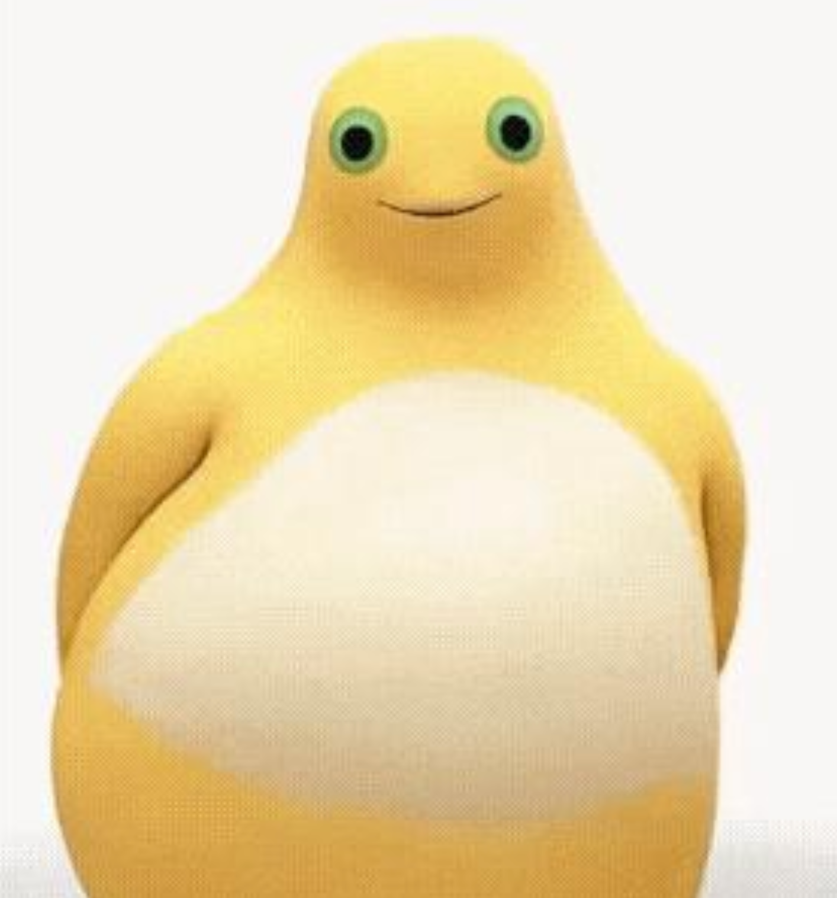
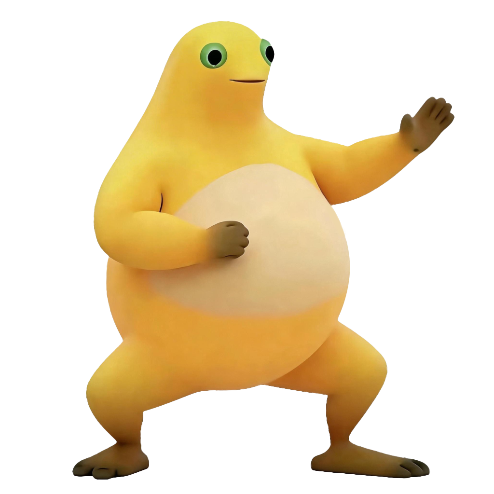
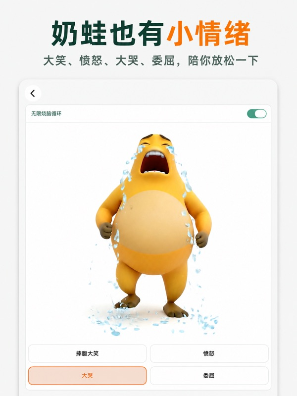
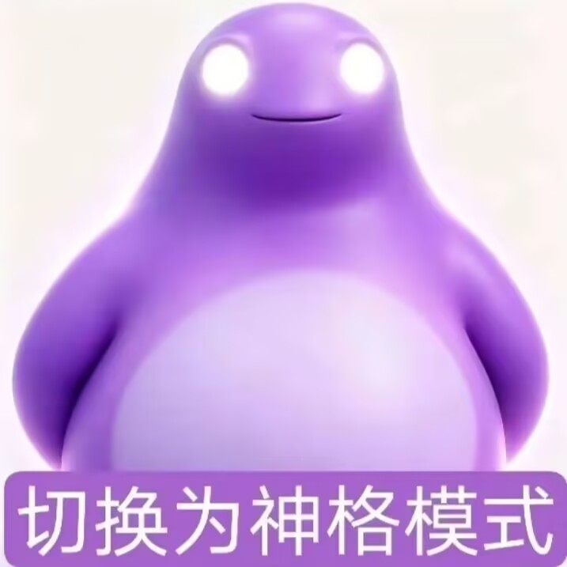
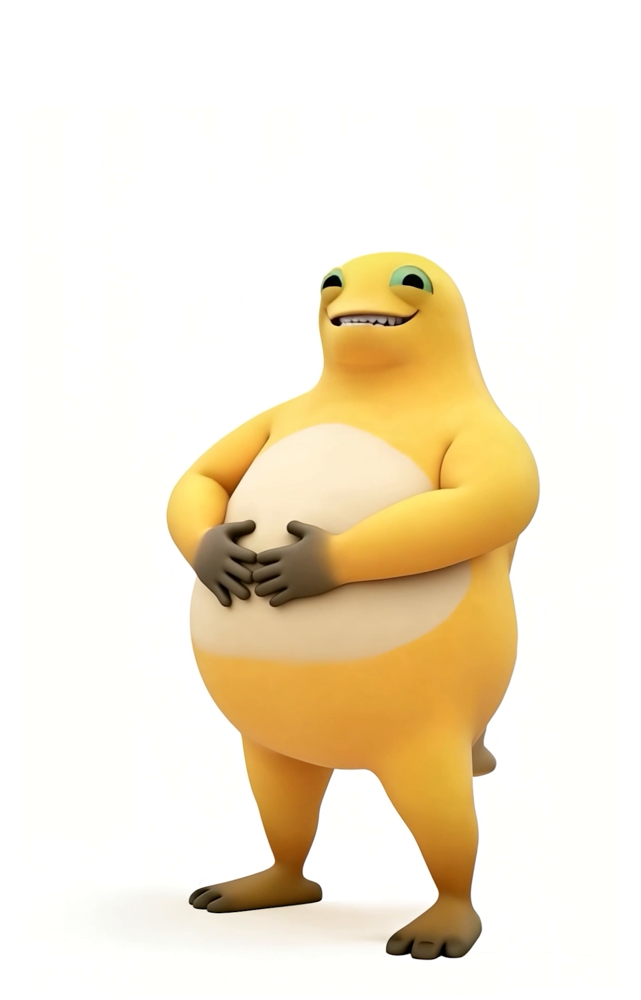
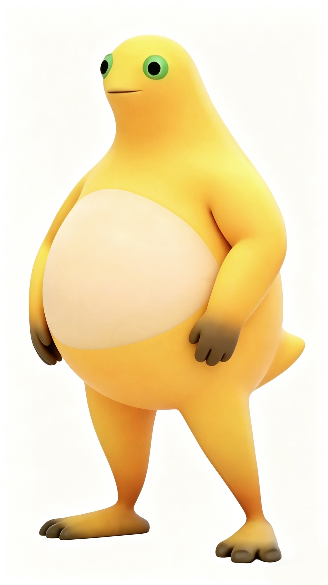
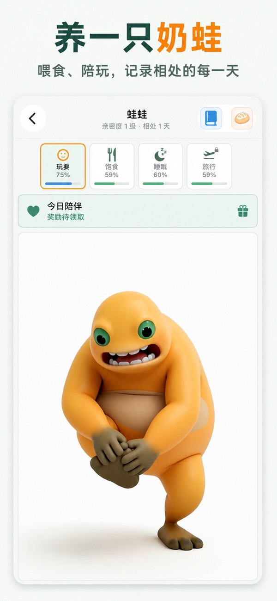
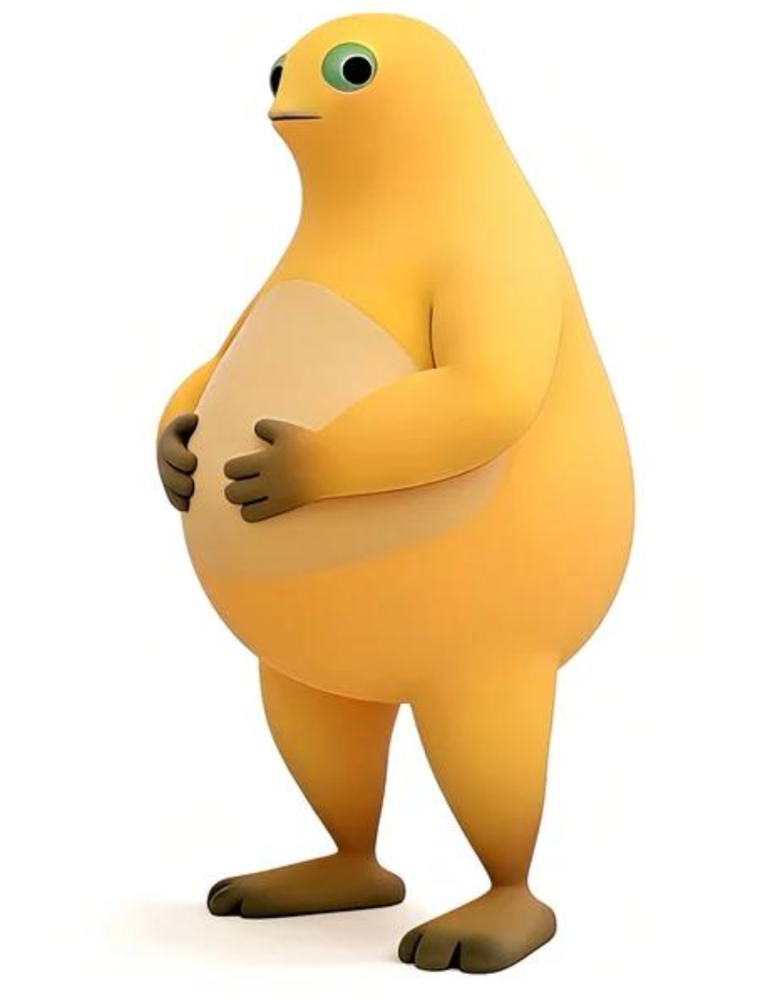

findings_agentD.md。
四张卡面图已由制作代理产出并通过独立审查（成品在 out/：card_calm / card_rage / card_divine / card_classic 及其 _bleed / _gray 版本），制作与审查记录见 findings_agentE.md。
两处姿势妥协（rage 抬臂→肘部外撑贴体侧、classic 背手→扶肚挺立）源于冻结网格的既有缺陷：手指/前臂内缘与肚皮同属一块焊接曲面，且 Meshy 自动权重污染了肚皮顶点，任何"手抬离体表"的姿势都会撕扯破面——若将来要还原梗图原始姿态，须按冻结资产解冻流程处理网格与权重。
rage 表情仍保留原梗"反差萌"（默认脸+嘴角微翘），待用户复核。

备选 A（推荐，定姿态与情绪）梗图"切换平静模式"。单臂自然下垂、身体侧转约 30°~45° 朝画面右方的慵懒后倾站姿，重心稳；绿眼环大黑瞳、闭口上扬短口缝（眼睛是睁开的，不是眯眼），松弛感来自站姿而非表情。蓝身体+浅蓝肚皮即 calm 皮肤配色来源。适用于全身居中、微侧构图。

备选 B（推荐，定形象）奶蛙正面微笑参考。正面、双手背后、上扬微笑嘴线，是全部参考图里笑意最明确的一张，情绪与 A 一致但"奶蛙本蛙"。缺点：半身近景构图（无腿脚）、画质偏软、正面平光体积感弱——作卡面需补画下半身并加强明暗。
梗图"切换愤怒模式"。一臂抬至头肩高度向斜外前方平伸、五指张开掌心朝外，另一手轻贴肚皮右侧——动势强但并非高举过头。红/橙红身体+奶白肚皮+深棕手脚与 rage 皮肤对应。决策点：原梗笑点是"文字暴怒、表情带笑"的反差萌（白环黑瞳圆睁+嘴角微翘），奶蛙版保留反差萌还是改真憋怒（鼓腮、眉区压低），评审时拍板。

备选 B（推荐，定形象）奶蛙招手/预备手势参考。一臂屈肘收在胸前、另一臂向斜上方伸出张开手掌，马步重心——与 A 的手势同构，形象即奶蛙本蛙，即"A 的姿势 + B 的身体"。注意：此图为黑底抠图，黑底高对比下轮廓特征极其丰富，也提示 rage 卡可用深色背景衬托主体。

备选 C（情绪演出参考，非基准）奶蛙正面大哭（闭眼+大张嘴+泪花粒子）。不作为基准形象，仅供 rage 款的愤怒表情幅度、泪花/特效设计语言迁移参考。

备选 A（推荐，定姿态与情绪）梗图"切换为神格模式"。正面端正对称、双臂垂放贴身、全白发光椭圆眼（无瞳孔、带泛光，全图最强记忆点）、闭口长弧微笑，超然感与反差幽默并存。紫身体+淡紫肚皮对应 divine 皮肤。Vuforia 风险：淡紫肚皮明度很高，与白背景去色后明暗差小，是三张梗图里特征最弱的一张——redraw 必须主动加描边/阴影层次，或用暗紫背景衬托白眼与浅色肚皮。

备选 B（推荐，定形象）奶蛙视频微仰拍帧（t6）。机位略低、角色俯视镜头，3/4 正面，是参考图里唯一露齿憨笑的一张（眼半眯、捂肚交握，可见小尾巴尖），表情信息量最大。作神格款形象基准时，把憨笑收敛为浅笑即可；"俯视镜头"自带一点睥睨感，与神格气质契合。

备选 A（推荐，定形象）奶蛙官方 hero 站姿。3/4 侧面、背手直立、下巴微抬，黄身体+奶白大肚皮+棕手脚，纯白底、全身完整、无水印，是 7 张官方参考里画质和形体最标准的一张——同时可作四卡共用的形体/配色校对基准。"平平无奇但自带一点傲娇"，与其他三款的"模式感"形成反差。

备选 B（推荐，定姿态与情绪）梗图同款奶蛙形象最清晰的一张网络图（App Store《奶蛙：奶蛙表情包》官方截图，600x1299）。黄肤胖蛙、大绿眼、咧嘴露牙开怀笑、抱脚站姿，白底居中、对比强、无大面积纯色块，Vuforia 友好。若经典款基调采纳"开心/元气"方向（三张梗图已覆盖静/动/圣，第四款补"开心"，张嘴笑区别于三张的闭口笑），这张的姿态情绪最合适；肤色按本项目奶白色替换。

备选 C奶蛙近正侧面、双手扶肚的放空站姿。纯白底、全身完整，暖橙色调偏重。日常感足够但姿态与表情信息量偏弱，且与 t1 趋同（t1 已撤出），列为替补。
candidates_web/，逐张评价见 findings_agentC.md。除 web_10、web_09 外其余未达备选线。findings_agentA.md（三张梗图）、findings_agentB.md（七张官方/视频参考）、findings_agentC.md（网络候选）。